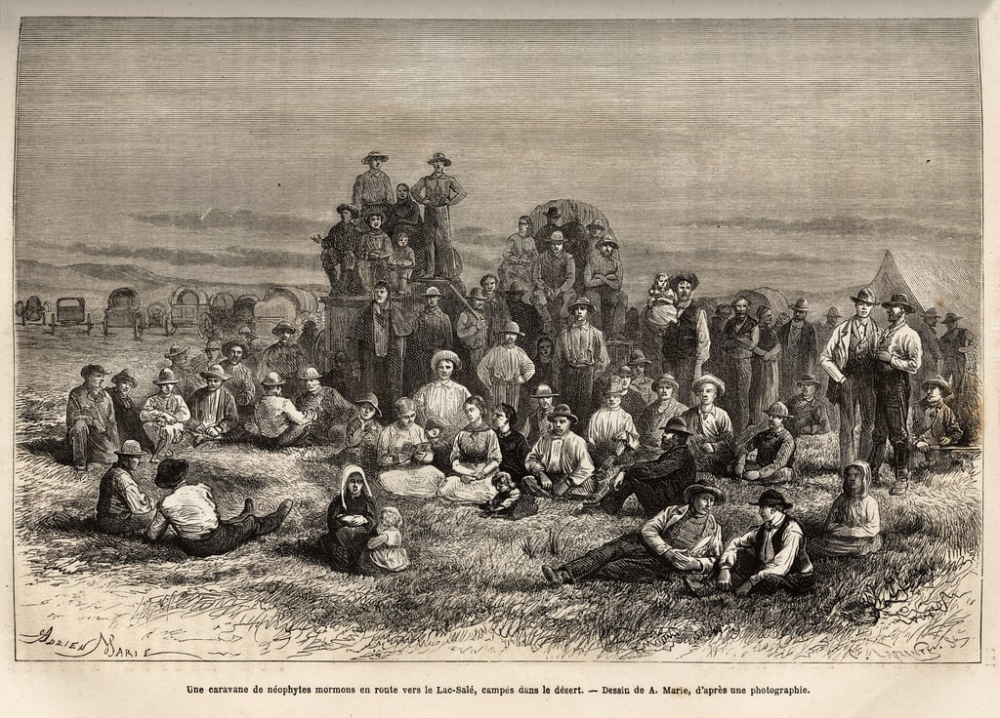

Journey Through the LeBaron Family History

The LeBaron family of Colonia LeBarón, in the Mexican state of Chihuahua, traces its origins to early 20th-century Mormon migration from the United States. Their story begins with Alma Dayer LeBaron Sr., who moved his family to northern Mexico in the 1920s. Like other Mormon settlers in the region, he sought to continue practicing plural marriage after it was officially abandoned by the The Church of Jesus Christ of Latter-day Saints. Over time, these settlers established small agricultural colonies, including Colonia LeBarón.
In the 1950s, divisions within the family led to the creation of a breakaway religious movement known as the Church of the Firstborn. Leadership disputes intensified among Alma’s sons, particularly Joel LeBaron and Ervil LeBaron. Joel initially led the group, but Ervil later formed a rival faction that embraced extreme doctrines and enforced loyalty through violence. During the 1960s and 1970s, Ervil orchestrated a series of assassinations against perceived enemies, including the killing of Joel. These events gave the LeBaron name a reputation associated with religious extremism and internal conflict.
Despite this turbulent period, not all members of the extended family were involved in or supportive of these actions. Over the decades, Colonia LeBarón evolved into a more diverse community. While some residents continued practicing fundamentalist beliefs, others moved away from polygamy and integrated more fully into mainstream Mexican society. Many families maintained dual cultural and economic ties to both Mexico and the United States, often working in agriculture and local business.
In the 21st century, the LeBaron family again gained international attention, this time due to violence linked to organized crime in northern Mexico. Several family members became vocal activists against kidnapping and cartel activity, most notably Benjamin LeBaron, who was murdered in 2009.